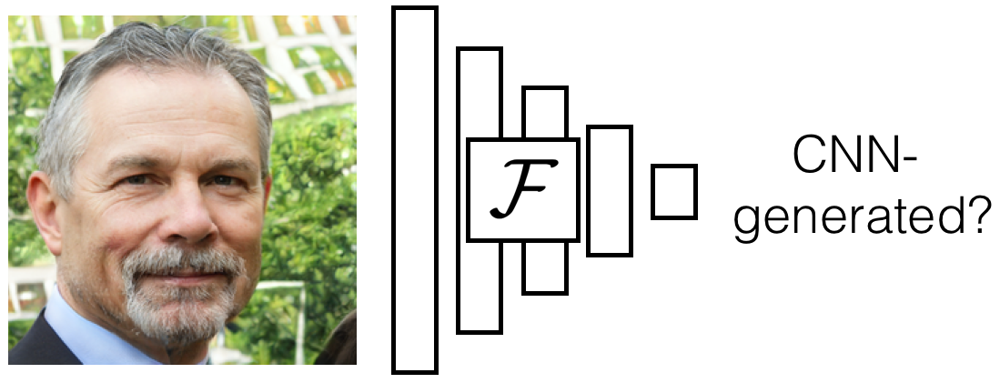
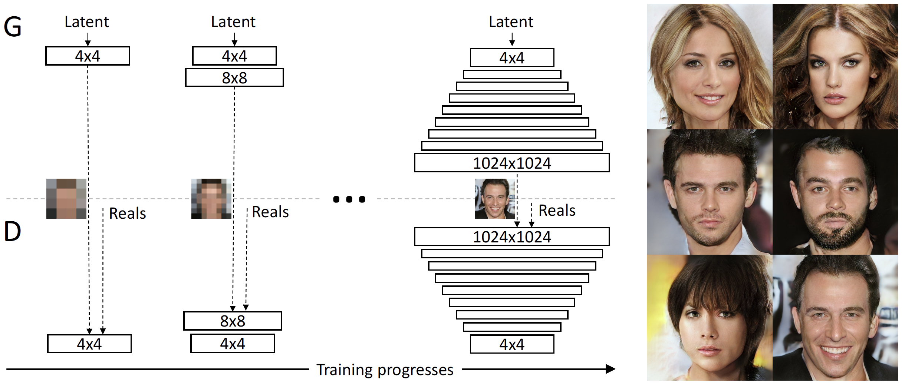

Artificial Fingerprinting for Generative Models:
Rooting Deepfake Attribution in Training Data
ICCV 2021 Oral
1. University of Maryland
2. Max Planck Institute for Informatics
3. CISPA Helmholtz Center for Information Security
Abstract
Photorealistic image generation has reached a new level of quality due to the breakthroughs of generative adversarial networks (GANs). Yet, the dark side of such deepfakes, the malicious use of generated media, raises concerns about visual misinformation. While existing research work on deepfake detection demonstrates high accuracy, it is subject to advances in generation techniques and adversarial iterations on detection countermeasure techniques. Thus, we seek a proactive and sustainable solution on deepfake detection, that is agnostic to the evolution of generative models, by introducing artificial fingerprints into the models.
Our approach is simple and effective. We first embed artificial fingerprints into training data, then validate a surprising discovery on the transferability of such fingerprints from training data to generative models, which in turn appears in the generated deepfakes. Experiments show that our fingerprinting solution (1) holds for a variety of cutting-edge generative models, (2) leads to a negligible side effect on generation quality, (3) stays robust against image-level and model-level perturbations, (4) stays hard to be detected by adversaries, and (5) converts deepfake detection and attribution into trivial tasks and outperforms the recent state-of-the-art baselines. Our solution closes the responsibility loop between publishing pre-trained generative model inventions and their possible misuses, which makes it independent of the current arms race.
Results
Samples on CelebA 128×128
Samples on LSUN Bedrooms 128×128
Samples on LSUN Cats 256×256

Samples on CIFAR-10 32×32
Samples on Horse2Zebra 256×256

Samples on Cat2Dog 256×256

Fingerprint detection accuracy and image fidelity
Robustness against image perturbations on CelebA 128×128
Deepfake detection and attribution accuracy

Video
Code
Press coverage

thejiangmen Academia News
Citation
@inproceedings{yu2021artificial,
author={Yu, Ning and Skripniuk, Vladislav and Abdelnabi, Sahar and Fritz, Mario},
title={Artificial Fingerprinting for Generative Models: Rooting Deepfake Attribution in Training Data},
booktitle = {IEEE International Conference on Computer Vision (ICCV)},
year={2021}
}
Acknowledgement
We thank David Jacobs, Matthias Zwicker, Abhinav Shrivastava, Yaser Yacoob, and Apratim Bhattacharyya for constructive discussion and advice.
Ning Yu was partially supported by Twitch Research Fellowship. Vladislav Skripniuk was partially supported by IMPRS scholarship from Max Planck Institute. This work was also supported, in part, by the DARPA SemaFor (HR001119S0085) program. Any opinions, findings, conclusions, or recommendations expressed in this material are those of the authors and do not necessarily reflect the views of the DARPA.
Related Work
|
|
N. Yu, L. Davis, M. Fritz. Attributing fake images to gans: Learning and analyzing gan fingerprints. ICCV 2019. Comment: Our earlier work. A GAN-based Deepfake detection and attribution baseline method that extracts high/low-level and high/low-frequency image features in closed worlds. |
|  |
S.Y. Wang, O. Wang, R. Zhang, A. Owens, A. Efros. CNN-generated images are surprisingly easy to spot... for now. CVPR 2020. Comment: A CNN-based Deepfake detection baseline method that generalizes to open-world binary classification using data augmentation. |
|  |
T. Karras, T. Aila, S. Laine, J. Lehtinen. Progressive Growing of Gans for Improved Quality, Stability, and Variation. ICLR 2018. Comment: A state-of-the-art unconditional GAN source for our generated image detection and attribution. |
|
|
T. Karras, S. Laine, T. Aila. A style-based generator architecture for generative adversarial networks. CVPR 2019. Comment: A state-of-the-art unconditional GAN source for our generated image detection and attribution. |
|
|
T. Karras, S. Laine, M. Aittala, J. Hellsten, J. Lehtinen, T. Aila. Analyzing and improving the image quality of stylegan. CVPR 2020. Comment: A state-of-the-art unconditional GAN source for our generated image detection and attribution. |
|
A. Brock, J. Donahue, K. Simonyan. Large scale GAN training for high fidelity natural image synthesis. ICLR 2019. Comment: A state-of-the-art class-conditional GAN source for our generated image detection and attribution. |
|
|
|
T. Park, A. Efros, R. Zhang, J.Y. Zhu. Contrastive learning for unpaired image-to-image translation. ECCV 2020. Comment: A state-of-the-art image-to-image GAN source for our generated image detection and attribution. |